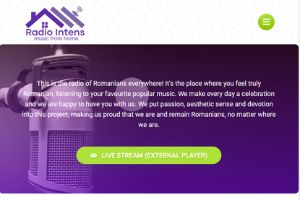
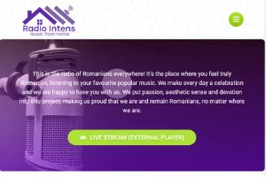
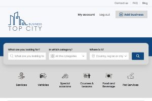

Radio Intens
Modern, user-friendly website for Radio Intens, developed using HTML and CSS. Engaging design, intuitive navigation, and optimized for search engines.

Hello! I'm Alin Burghila, a web developer passionate about creating engaging and responsive websites. Since enrolling in the Software Developer course at Pitman Training in 2021, I've been honing my skills in HTML, CSS, and JavaScript, allowing me to build professional websites that cater to a diverse range of audiences.
I believe in the importance of teamwork and effective communication when collaborating on web development projects. I'm committed to working closely with clients to ensure their vision is brought to life in the digital space.
Staying current with the latest industry trends, technologies, and best practices is a priority for me. I'm always eager to learn and adapt in order to deliver cutting-edge solutions to my clients. Please explore my portfolio to see some of my work, and feel free to contact me if you'd like to discuss a project or collaboration.
Modern, user-friendly website for Radio Intens, developed using HTML and CSS. Engaging design, intuitive navigation, and optimized for search engines.
Professional and polished website developed using Osclass platform, HTML, CSS, and JavaScript. Features a clean design, easy navigation, and engaging content.
Email: alin@burghila.co.uk